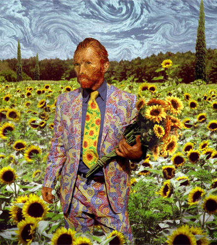

ΨΥΧΙΚΗ ΥΓΕΙΑ, ΔΙΚΑΙΩΜΑΤΑ ΚΑΙ ΚΟΙΝΩΝΙΚΗ ΧΕΙΡΑΦΕΤΗΣΗ
Σάββατο, 24 Μαϊου 2008, 9 πμ,
στο Πνευματικό Κέντρο του Δήμου Αθηναίων (Ακαδημίας 50)
και στη διαδήλωση προς τη Βουλή (1 μμ),
ΓΚΡΕΜΙΖΟΥΜΕ ΤΑ ΤΕΙΧΗ
ΤΟΥ ΑΠΟΚΛΕΙΣΜΟΥ
ΤΗΣ ΚΟΙΝΩΝΙΚΗΣ ΠΡΟΚΑΤΑΛΗΨΗΣ
ΤΗΣ ΚΡΑΤΙΚΗΣ ΑΔΙΑΦΟΡΙΑΣ
ΚΑΛΕΣΜΑ ΓΙΑ ΚΙΝΗΤΟΠΟΙΗΣΗ ΣΤΙΣ 24 ΜΑΗ 2008
Κραυγή αγωνίας, οργής και αγανάκτησης στο χώρο της ψυχικής υγείας από χιλιάδες «ασθενείς»-χρήστες των υπηρεσιών και τις οικογένειές τους, από το χώρο που διαρκώς διευρύνεται των «ευπαθών ομάδων» κάθε είδους, από τους μετανάστες και τους πρόσφυγες που υφίστανται τις ψυχολογικές συνέπειες του ξεριζωμού και των ρατσιστικών διακρίσεων, από τους απλήρωτους ή κακοπληρωμένους λειτουργούς της ψυχικής υγείας στον δημόσιο και τον ιδιωτικό τομέα.
-Ανυπαρξία και υπονόμευση της δημιουργίας εναλλακτικών στον εγκλεισμό κοινοτικών υπηρεσιών πρόληψης, φροντίδας και στήριξης. Μετά από 25 χρόνια «ψυχιατρικής μεταρρύθμισης», η επικρατούσα ψυχιατρική φροντίδα εξακολουθεί, κάτω από την ασφυκτική χειραγώγηση των φαρμακοβιομηχανιών, να λειτουργεί φυλακτικά και κατασταλτικά, πνίγοντας τις πολύπλοκες ανάγκες των πασχόντων στους κανόνες μιας κοινωνικής Τάξης ολοένα πιο άκαμπτης και δυσανεκτικής προς την όποια διαφορετικότητα. Συμπεριφορές μη αφομοιώσιμες τείνουν να ψυχιατρικοποιούνται. Εγκλεισμός, αποκλεισμός και στιγματισμός εξακολουθούν να είναι οι βασικοί πυλώνες του επικρατούντος ψυχιατρικού μοντέλου.
-Πλήρης απουσία ευκαιριών και θέσεων εργασίας για την ένταξη των ψυχικά πασχόντων και άλλων «ευπαθών ομάδων».
-Οικογένειες χωρίς καμιά υλική, κοινωνική και συναισθηματική στήριξη για ν΄ αντιμετωπίσουν τα πρόσθετα βάρη από την φροντίδα ενός πάσχοντος μέλους.
-Εκατοντάδες θέσεις εργαζομένων στις ψυχιατρικές μονάδες, νοσηλευτικού προσωπικού, γιατρών, κοινωνικών λειτουργών, ψυχολόγων, εργοθεραπευτών κλπ, μένουν κενές.
-Εκατοντάδες εργαζόμενοι, κυρίως στον ιδιωτικό «μη κερδοσκοπικό» τομέα, μένουν για μήνες απλήρωτοι και συχνά απολύονται όταν διεκδικούν τα δικαιώματά τους,
Οσο περισσότερο οι επιπτώσεις της οικονομικής και κοινωνικής κρίσης και οι πολιτικές του νεοφιλευθερισμού απεξαρθρώνουν τον κοινωνικό ιστό και βλάπτουν την ψυχική υγεία, σε σημείο που να προβλέπεται ότι ένας στους τέσσερις πολίτες θα αντιμετωπίσει σε κάποια στιγμή της ζωής του σοβαρό πρόβλημα ψυχικής υγείας, τόσο περισσότερο το σύστημα υπηρεσιών ψυχικής υγείας υποχρηματοδοτείται και σπρώχνεται στο δρόμο της εμπορευματοποίησης και της ιδιωτικοποίησης, της υποβάθμισης των παρεχόμενων υπηρεσιών και των επισφαλών σχέσεων εργασίας.
Αυτή η κατάσταση δεν μπορεί και δεν πρέπει να συνεχιστεί άλλο. Δεν αφορά μόνο τους άμεσα εμπλεκόμενους. Αφορά όλη την κοινωνία.
Ζητάμε:
-Διασφάλιση της δημόσιας, ίσης και δωρεάν παροχής υπηρεσιών ψυχικής υγείας, υψηλού ποιοτικού επιπέδου.
-Σεβασμό στο πρόσωπο του ψυχικά πάσχοντα και πλήρη διασφάλιση των ανθρώπινων και δημοκρατικών δικαιωμάτων του, στην πράξη και όχι στα λόγια.
-Προαγωγή της Αυτοβοήθειας και των εναλλακτικών τρόπων θεραπείας.
-Δίκτυο κοινοτικών υπηρεσιών ψυχικής υγείας, ολοκληρωμένων και προσιτών στους ασθενείς και στις οικογένειες, με δυνατότητα παροχής κατ΄ οίκον φροντίδας και με στόχο την πρόληψη, την έγκαιρη παρέμβαση και τη θεραπευτική συνέχεια. Διασφάλιση των προϋποθέσεων για ουσιαστική «ακρόαση», πρόληψη και αποκαστάσταση των πολύπλοκων
προβλημάτων ψυχικής υγείας των μεταναστών.
-Λήψη μέτρων για τη δραστική μείωση των αναγκαστικών νοσηλειών, οι οποίες θα πρέπει να είναι, πρωτίστως, στην αρμοδιότητα των υγειονομικών υπηρεσιών.
-Κατάργηση των περιοριστικών μέτρων, όπως οι μηχανικές καθηλώσεις και οι απομονώσεις. Διασφάλιση του ανοικτού χαρακτήρα των μονάδων ψυχιατρικής νοσηλείας και του πραγματικού σεβασμού των δικαιωμάτων των νοσηλευομένων.
-Εξασφάλιση θέσεων εργασίας με μέτρα όπως : η τήρηση του νόμου για το ποσοστό (που πρέπει ν΄ αυξηθεί) των ψυχικά πασχόντων για τις προσλήψεις στο Δημόσιο. Η παροχή κινήτρων για προσλήψεις στον ιδιωτικό τομέα. Η ουσιαστική χρηματοδότηση των ΚΟΙΣΠΕ από τον κρατικό προϋπολογισμό, ώστε να δημιουργήσουν επαρκείς, βιώσιμες και κανονικά αμειβόμενες θέσεις εργασίας, με ταυτόχρονη διασφάλιση της ουσιαστικής συμμετοχής και του ελέγχου της λειτουργίας τους από τα μέλη και τους εργαζόμενους.
-Ουσιαστική αύξηση του επιδόματος Πρόνοιας, το οποίο δεν θα πρέπει να διακόπτεται σε περίπτωση έναρξης εργασίας στο δημόσιο ή στον ιδιωτικό τομέα.
-Οικονομική υποστήριξη της οικογένειας. Ενσωμάτωση προγραμμάτων ψυχολογικής στήριξης των οικογενειών στις υπηρεσίες ψυχικής υγείας. Να μεταβιβάζεται η σύνταξη των γονέων, σε περίπτωση θανάτου τους, στα ψυχικά πάσχοντα παιδιά τους, χωρίς προϋποθέσεις.
-Αμεσες, επαρκείς σε αριθμό, προσλήψεις προσωπικού όλων των ειδικοτήτων σε όλες τις δημόσιες υπηρεσίες ψυχικής υγείας. Αύξηση των αποδοχών, διαρκής και ουσιαστική εκπαίδευση, χορήγηση ουσιαστικών κινήτρων.
-Εμπρακτη αναγνώριση από το κράτος των ευθυνών του για την εξασφάλιση της σταθερής καταβολής των αποδοχών του προσωπικού (επαρκούς, εκπαιδευμένου, με συμβάσεις αορίστου χρόνου) και της ποιότητας των υπηρεσιών στους χρήστες, στον «ιδιωτικό μη κερδοσκοπικό τομέα». Ελεγχος των υπηρεσιών σε όλα τα επίπεδα, με συμμετοχή εκλεγμένων εκπροσώπων χρηστών και εργαζομένων.
Καλούμε όλους, άτομα, ομάδες, συλλογικότητες και σωματεία χρηστών, οικογενειών, εργαζομένων στην ψυχική υγεία, στο δημόσιο και στον ιδιωτικό τομέα, προσφύγων και μεταναστών, σπουδαστών των σχολών επαγγελμάτων που εμπλέκονται στην ψυχική υγεία και καθένα που θέλει να αγωνιστεί για ένα αξιοπρεπές, ολοκληρωμένο και αποτελεσματικό σύστημα υπηρεσιών ψυχικής υγείας, να συμμετάσχουν στην εκδήλωση- συζήτηση, με θέμα:
«ΨΥΧΙΚΗ ΥΓΕΙΑ, ΔΙΚΑΙΩΜΑΤΑ ΚΑΙ ΚΟΙΝΩΝΙΚΗ ΧΕΙΡΑΦΕΤΗΣΗ»
Σάββατο, 24 Μαϊου 2008, 9 πμ,
στο Πνευματικό Κέντρο του Δήμου Αθηναίων (Ακαδημίας 50)
και στη διαδήλωση προς τη Βουλή (1 μμ),
Φτάνει πια.
Απαιτούμε λύσεις εδώ και τώρα.
«Ομάδα Αυτοβοήθειας Αθήνας», «Πανελλήνια Ομοσπονδία Συλλόγων Οικογενειών Ψυχικά Πασχόντων» (ΠΟΣΟΨΥ), «Κίνημα Αυτοβοήθειας Χρηστών Υπηρεσιών Ψυχικής Υγείας Χανίων», «Σωματείο Χρηστών Υπηρεσιών Ψυχικής Υγείας-Αυτοεκπροσώπηση», «Παγκρήτιος Σύλλογος Οικογενειών Ψυχική Υγείας», «ΚΟΙΣΠΕ ΤΟΨΥ Δωδεκανήσου» (Λέρος), «Τριμελής Επιτροπή Εργαζομένων στις ΘΕ.ΣΥ.ΜΟ Δρομοκαϊτείου», «ΚΟΙΣΠΕ ΤΟΨΥ Δυτικής Θεσσαλονίκης», «Πανελλαδική Συσπείρωση για την Ψυχιατρική Μεταρρύθμιση», «Σωματείο Εργαζομένων στο Περιβολάκι», «Σωματείο Εργαζομένων στις Κοινωνικές Υπηρεσίες Ιδιωτικών Φορέων», «Κίνηση Αδελφών Ατόμων με Προβλήματα Ψυχικής Υγείας», «Νέο Ξεκίνημα για την Υγεία», «18 Ανω», «Δ.Υ.Ψ.Α.»,«Σύλλογος για την προαγωγή της ψυχικής υγείας ‘Αλκυονίδες’» (ΨΝΑ), «Παρατηρητήριο για τα Δικαιώματα στο χώρο της Ψυχική Υγείας», «Εθελοντική Εργασία Αθήνας».
|